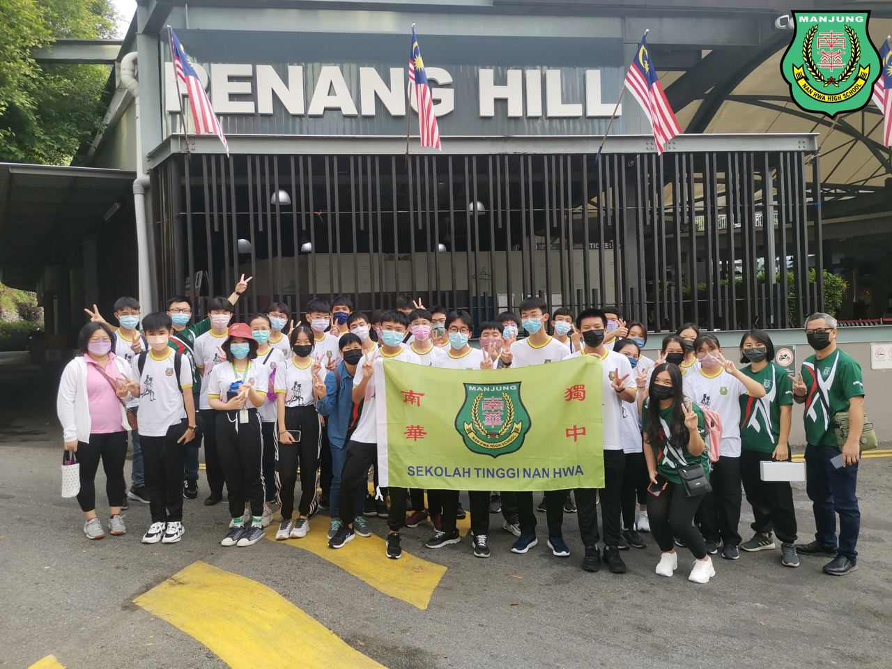
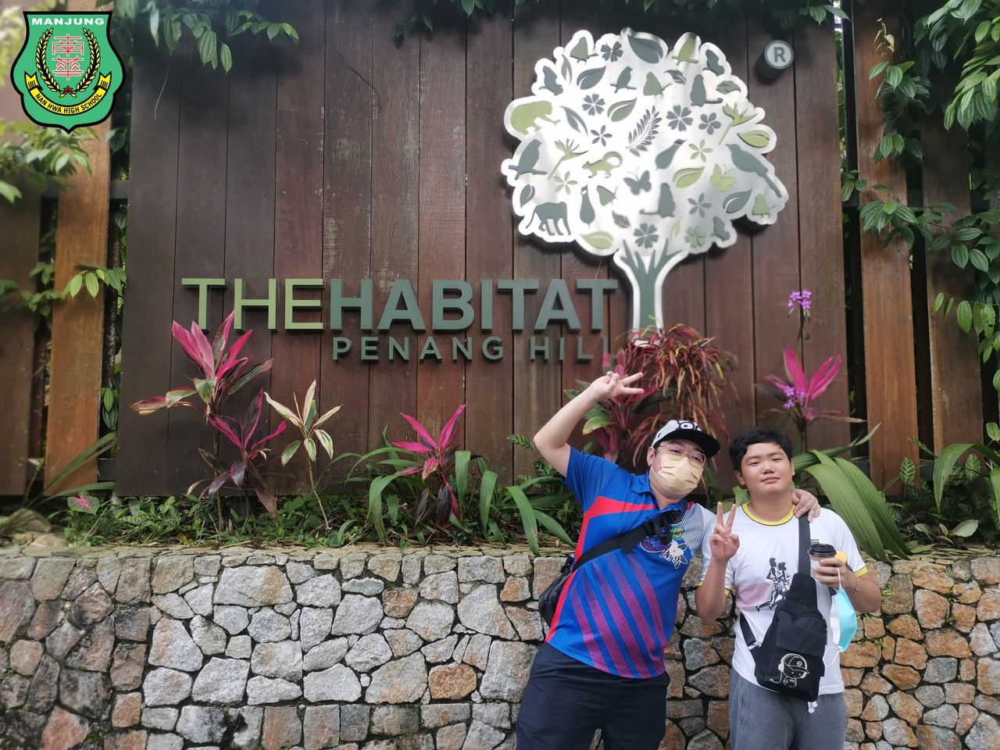
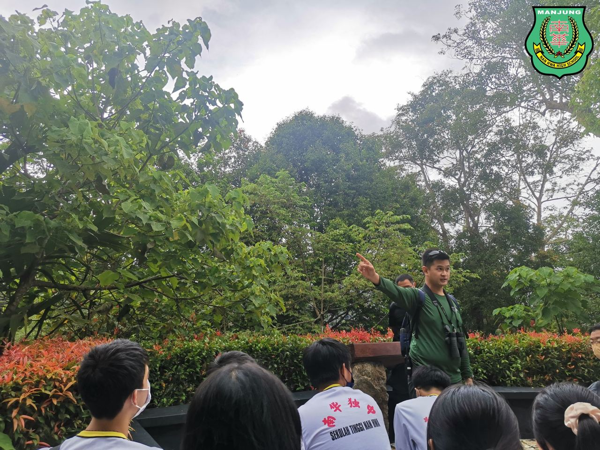
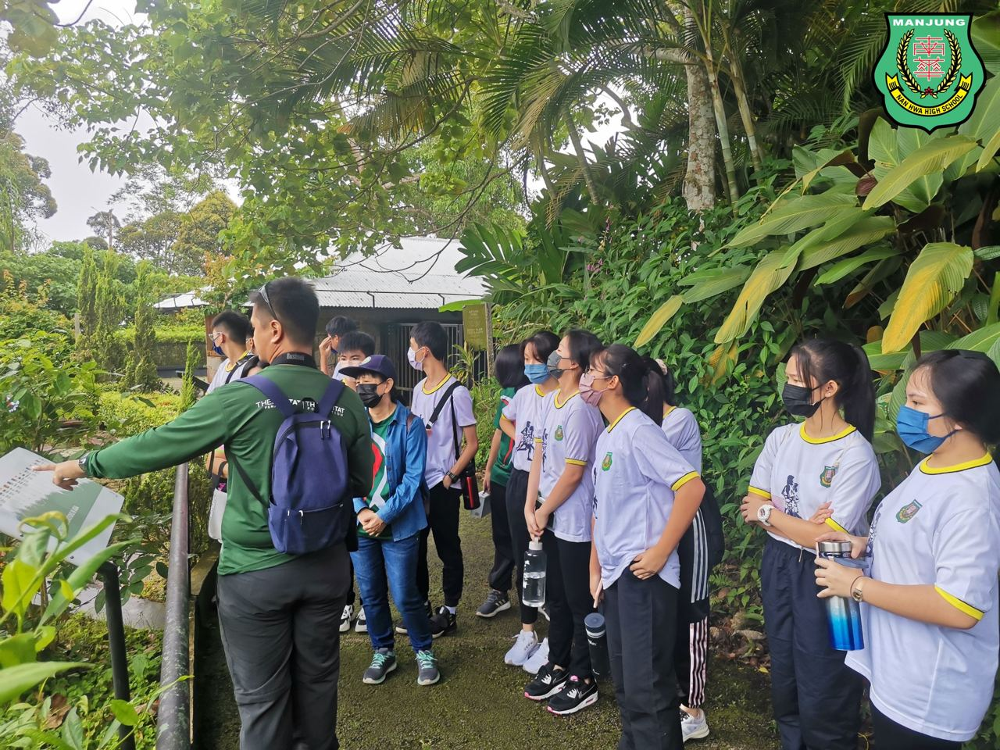
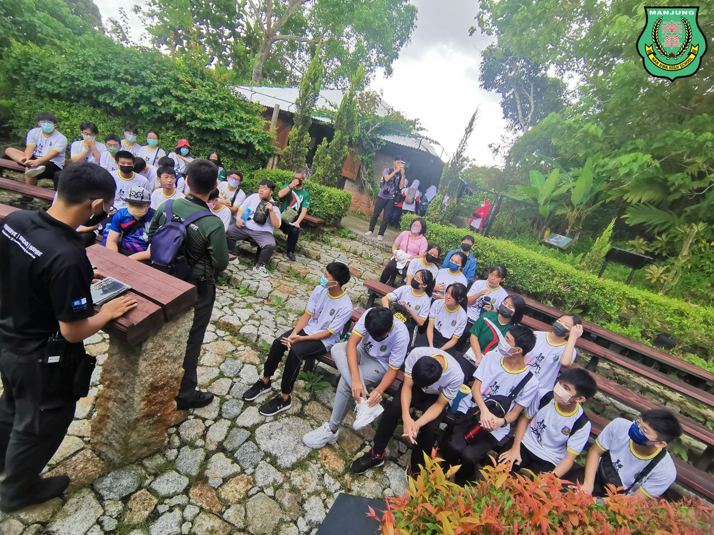
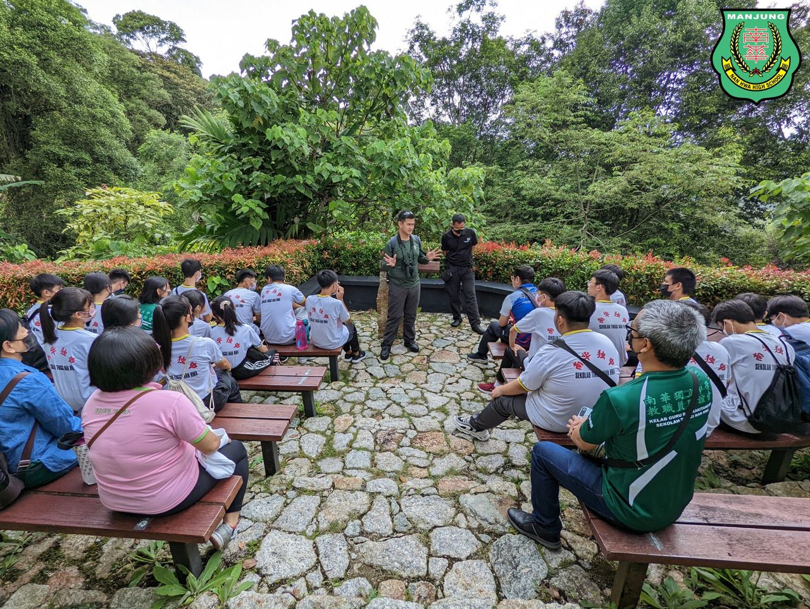
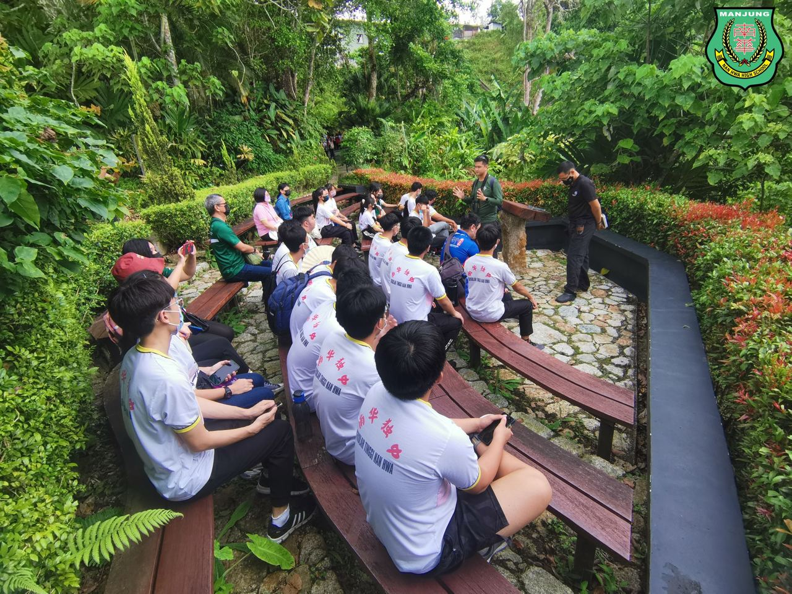
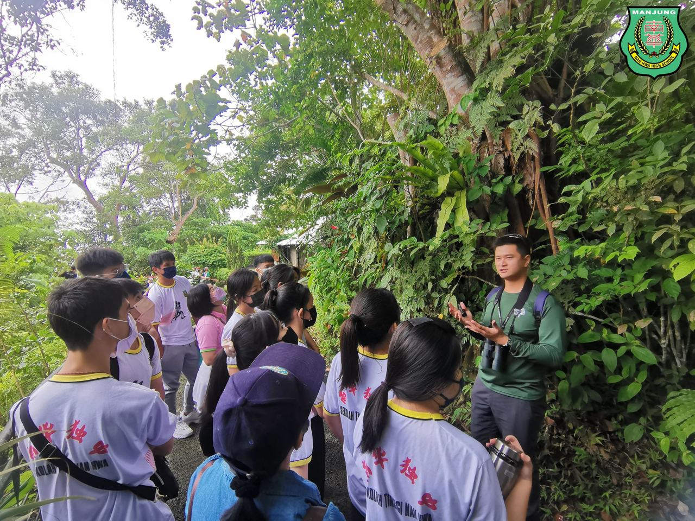

[环境教育课程]
[环境教育课程]
槟城生态与文化之旅
Day ①
受 The Habitat Foundation 邀请，本校有28位学生与6位老师共赴参观 The Habitat Penang Hill 生态公园。负责解说的包括有高级项目行政人员彭依恒先生以及解说员李凯贤导师。
除了有专业的生态导览解说，师生们也有机会体验全世界最长的两跨式应力带桥——乌叶猴树冠吊桥；以及登上全槟城最高的瞻望点——柯蒂斯峰树顶步道。
槟升旗山是继彭亨珍妮湖及沙巴克洛克山脉后，成为我国第3个UNESCO生物圈保护区，透过此次的槟城生态与文化之旅，师生皆能从中体会到人与自然之间和谐及可持续关系的重要性，为关怀环境种下一颗善的种子。
#环境教育课程 #TheHabitatFoundation
#ThePenangHill #生态与文化之旅
#南华独中 #曼绒 #实兆远







